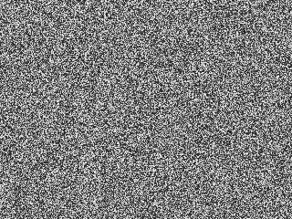

Debate Is (Not) a Lullaby
By Pedro Silva
September 29th, Trump and Biden took to the stage to hold this election's first presidential debate. Debate is a storied institution, we're told, hailing from such a pedigree that participants, on good faith alone, were expected to abide by agreed-upon rules. What resulted was a nonsensical cascade of interruptions as Wallace, the debate's moderator, desperately tried to reign spurious accusations, masculine showboating and petty insults into the quarter of productive policy distinctions. Across Twitter's #DebateNight thread, the prevailing meme was that of two kindergartners locked in a playground brawl; across news networks, the predictable rounds of “look-ma'-my-team-won” punditry. By all around consensus, the dominating adjective was “embarrassing”.
The following is a music generator that plays with the characterization of the debaters as mud-slinging schoolchildren.
Use the Transcript Timeline slider to rewind or fastforward along the trancript.
Press the Interrupt button to interrupt the current speaker and move on to the next. Every interruption introduces a random element of dissonance.
Once discordant, there is no re-harmonizing. Luckily, you can refresh your browser.